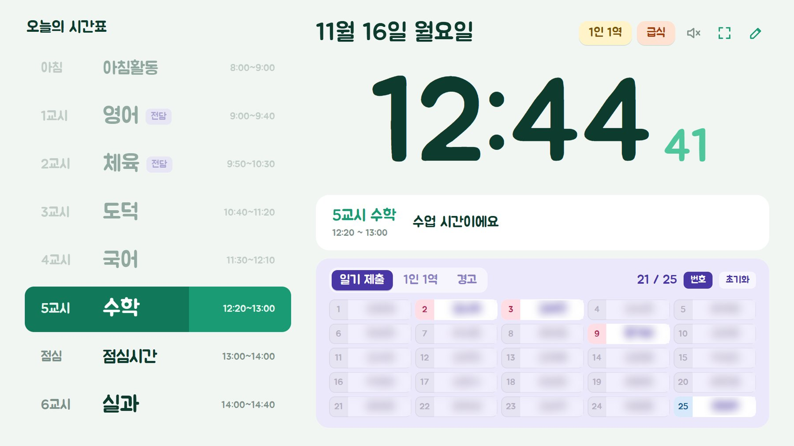
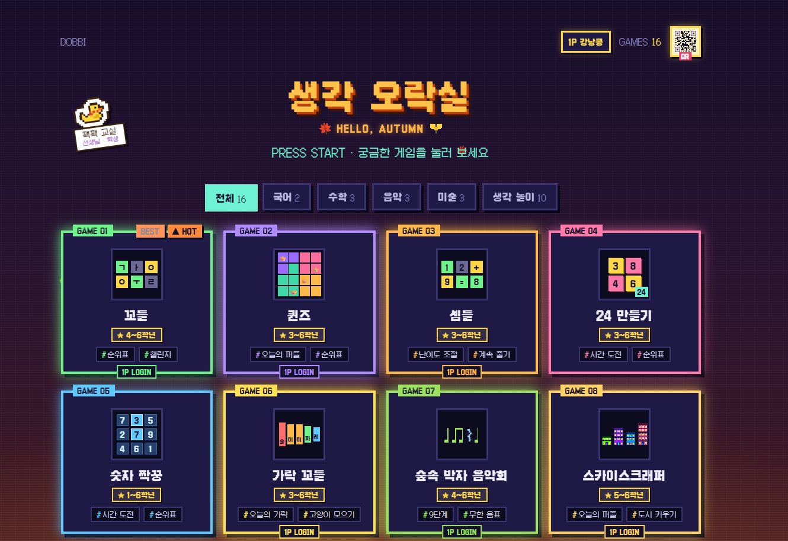
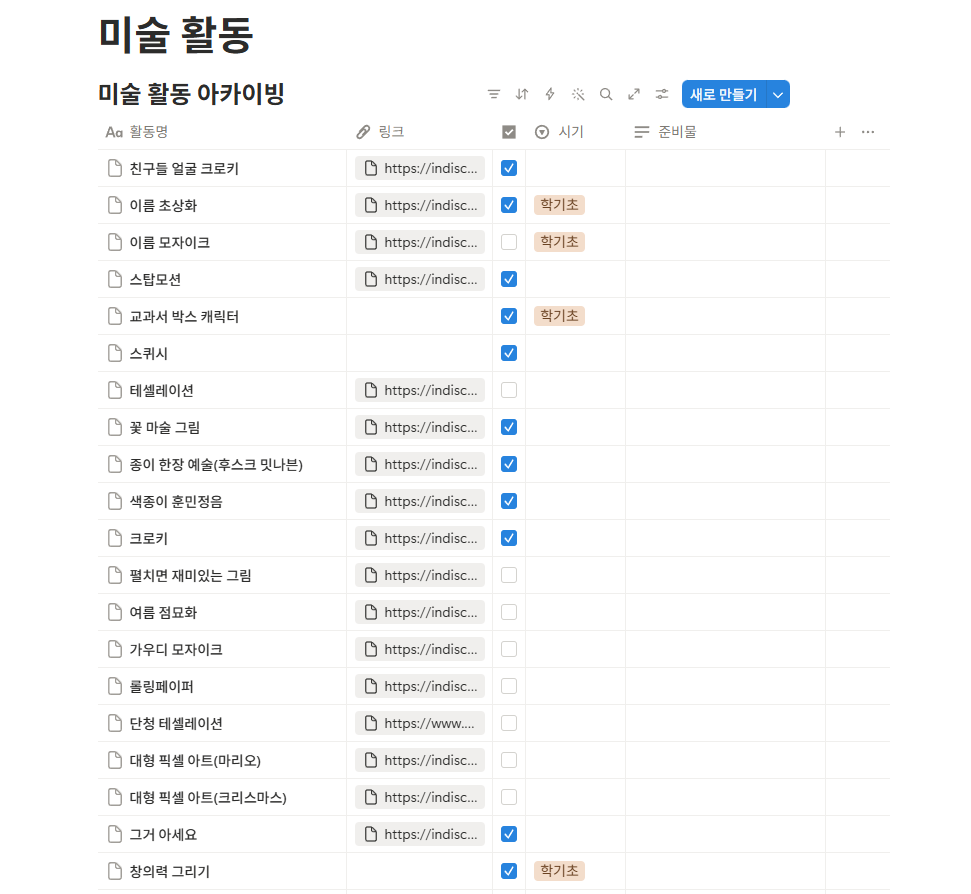
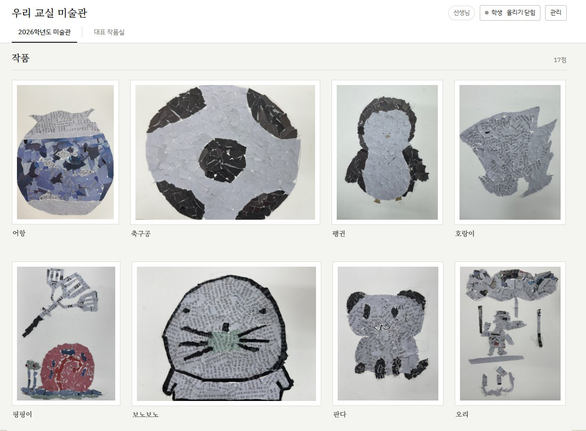

CLASSROOM TOOLS
금산초등학교 교사 최용수
TODAY'S QUESTION
TODAY
PART 1
수업 기자재
알아보기
의미와 종류, 우리 반 사례
PART 2
직접
써 보기
패들렛, 캐치마인드
PART 3
자료
쌓아 가기
노션, 학급 미술관
PART 1
PART 1
교사의 설명을 돕고
학생의 활동을 지원하는
기기와 도구
많이 쓰기보다 잘 고르기
PART 1
01
전자칠판 ★
실물화상기
스피커
02
스마트폰 ★
태블릿
컴퓨터
03
패들렛 ★
생성형 AI ★
노션 ★
★ 오늘 직접 쓰거나 보여 드릴 도구
PART 1 · TYPE 01
전자칠판 ★
자료와 함께 볼 곳, 물을 질문을 띄우기
실물화상기
시범, 풀이 과정, 작품의 세부를 크게
스피커
수업 전 교실 뒤에서 음량 확인하기
PART 1 · EXAMPLE
01
오늘의 시간표
02
지금 수업 안내
03
과제 제출 확인

PART 1 · TYPE 02
스마트폰 ★
촬영, 녹음, 결과물 올리기
태블릿
자료 탐색, 결과물 만들기
컴퓨터
검색, 문서와 발표 자료 만들기
기기가 부족하면 짝·모둠으로, 조작·기록·발표 역할 나누기
PART 2
PART 2 · BEHIND
AI와 게임을 만든 과정
01
AI에 요청
02
직접 해 보기
03
학생 반응 보기
04
고치기

PART 2 · STEP 03
① 여섯 색을 하나씩 찾기
② 색 칸마다 사진만 올리기
PART 2 · LOOK BACK
모둠별 · 주제별
모음이 됩니다
내 실습 반에서는 어디에 쓸 수 있을까요?
PART 3
1년차
2년차
3년차
1년차
2년차
3년차
수업하고, 좋았던 것을 남기면 내년이 쉬워진다

PART 3 · ARCHIVE 02
학생 작품이
해마다 너무 많아져
사이트로 모읍니다
연도별 전시실 · 대표 작품실

REVIEW
수업 전
수업 중
수업 후
이 도구는 학생의 어떤 배움을 돕는가?
Q & A
자료는 오늘부터, 한 줄씩